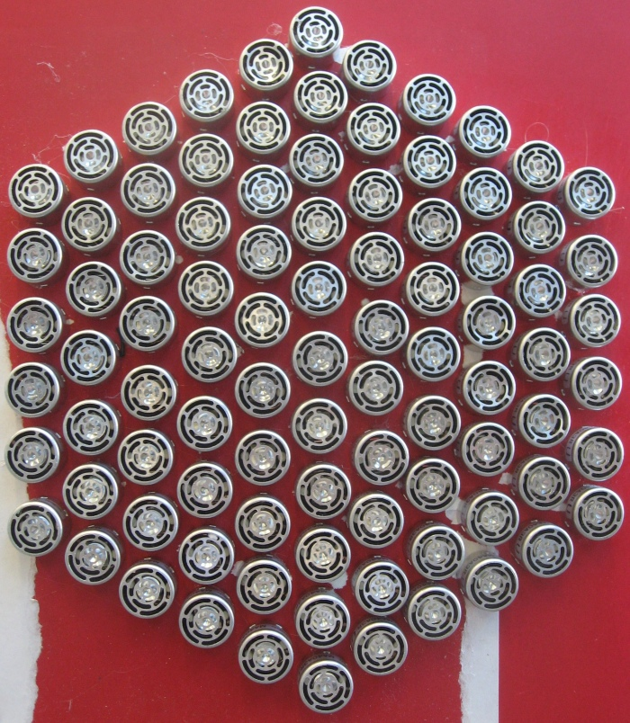
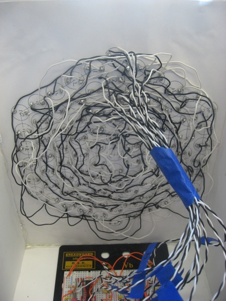

Ultrasonic Transducer Array
Introduction:
A paper entitled "Non-contact Method for Producing Tactile Sensation Using Airborn Ultrasound" by the University of Tokyo prompted us to begin our exploration of using a modulated ultrasound signal to provide non-contact tactile feedback. The University of Tokyo researchers used their device to provide "feedback to bare hands in free space with high spatial and temporal resolution." This option fit in well with our theme of non-contact sensing and non-contact feedback, and provided a challenging reach project for us. To simplify our task, we focused on creating a stationary force that is perceptible at one location in front of the ultrasound array.
Physical Design:
An array of numerous ultrasound transducers is needed to create a force perceptible by a human hand. Following the example in the paper, we built a hexagonal array with 91 ultrasound transducers. The ultrasound pulse has a wide angle of dispersion, so each transducer could be mounted flush on the board rather than angled to focus at one point. However, to create a perceptible force, all 91 ultrasound signals must arrive at a designated point in phase with each other, so that they constructively interfere and create a large force. We chose an arbitrary height of 30 cm above the array as the focal point. Because we can't place the transducers all in the same location, they are arranged in a tightly packed hexagonal array, requiring that the ultrasound signals generated by the transducers further away from the center travel further. So that all signals constructively interfere, one must introduce a phase delay, which is explained in more detail in the next section.
Electrical Design:
Buffer --> Low Pass Filter --> Schmitt Trigger --> Inverter --> H-Bridge
The ultrasound transducer looks like a piezo-electric device from an electrical standpoint. It outputs an ultrasound signal at 40kHz. The human hand can only detect the onset or offset of this signal: therefore the 40kHz ultrasound signal must be modulated at approximately 200Hz. We used two signal generators in lab to create both signals. One requirement for the circuit design was that all devices had to respond faster than 40kHz. To drive the ultrasound transducers, we designated 12 channels to account for the varying distance from center of each set of transducers. Each channel had either 1, 6, or 12 transducers wired in parallel. In order to source sufficient current, we drove each channel with an L293B H-Bridge. One input to the H-Bridge was inverted using an HC04, so that despite using only a Vin of 13.8V, we were able to switch 24V peak to peak (because of H-Bridge loss of 1.8V, so Vin 12V on each side).
In order to create the phase delay, we used a low pass RC filter. For each channel, we calculated the distance to the focal point (root of (distance from center squared + height to focal point squared)), divided by the speed of sound, and subtracted the time required for the shortest signal path (from the center) to determine the phase delay time for each channel. Using the time constant for an RC filter, T = RC, we could then determine appropriate values for R and C. We used a multimeter to measure R and C accurately so that our time constant was within 10% of what we needed it to be. The 40 kHz output from the signal generator was used to enable/disable 12 channels on a MM74HCT244 buffer, each to drive an RC low pass filter circuit, because the signal generator cannot source sufficient current. Each output from the low pass filter was put through the LM339 Schmitt Trigger, so that a clean digital signal was re-established, with an appropriate phase delay. This signal was split into two lines, one which went directly to the H-Bridge and the other that was inverted first.
Future Direction:
Unfortunately, in the short time available for this project, we were never able to get a focused ultrasound signal to generate a perceptible force. The reason was that tuning the RC circuits proved difficult, since we could not create a phase delay of much more than pi/2 radians before the digital signal in came out looking like a triangular waveform. However, the output signal from the H-Bridge was sufficient to drive the ultrasounds channel, making both a perceptible sound (due to the 200Hz modulation) and a perceptible feeling of small pressure change or static electricity at a close distance to the array. We anticipate that we will continue work on this device, once we learn how to use timing circuits in ME218B that will also us to avoid using the low pass RC filters. If were to do this project again, we would also have a PCB made for the array of ultrasound transducers, because wiring all 91 proved to be a lot of work.
